Bem-vindo à Aula de Posicionamento CSS!
Role esta página para baixo para observar o comportamento visual de cada uma das propriedades: sticky, relative, absolute, fixed e as camadas com z-index.
Fone de Ouvido Bluetooth (position: relative)
Este card possui position: relative, servindo de âncora para a etiqueta "PROMOÇÃO" que tem position: absolute.
Se o card não fosse relativo, a etiqueta iria parar no topo da janela do navegador!
📌 Aviso (position: relative): Este bloco foi empurrado 10px para baixo e 15px para a direita a partir do seu lugar original!
↓ Role mais a página para testar o efeito do Sticky no topo e do Fixed no canto inferior ↓
O que é o z-index?
Define a ordem das camadas de profundidade:
• O card comum fica na camada base.
• A etiqueta de promoção usa z-index: 10 para cobrir a borda do card.
• A barra do topo usa z-index: 100 para passar por cima do card ao rolar.
• O botão do WhatsApp usa z-index: 999 para ficar sempre visível acima de tudo!
Fim da página de demonstração.